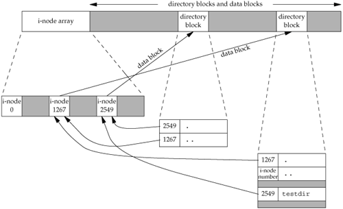

4.14. File SystemsTo appreciate the concept of links to a file, we need a conceptual understanding of the structure of the UNIX file system. Understanding the difference between an i-node and a directory entry that points to an i-node is also useful. Various implementations of the UNIX file system are in use today. Solaris, for example, supports several different types of disk file systems: the traditional BSD-derived UNIX file system (called UFS), a file system (called PCFS) to read and write DOS-formatted diskettes, and a file system (called HSFS) to read CD file systems. We saw one difference between file system types in Figure 2.19. UFS is based on the Berkeley fast file system, which we describe in this section. We can think of a disk drive being divided into one or more partitions. Each partition can contain a file system, as shown in Figure 4.13. Figure 4.13. Disk drive, partitions, and a file system
The i-nodes are fixed-length entries that contain most of the information about a file. If we examine the i-node and data block portion of a cylinder group in more detail, we could have what is shown in Figure 4.14. Figure 4.14. Cylinder group's i-nodes and data blocks in more detail
Note the following points from Figure 4.14.
We've talked about the concept of a link count for a regular file, but what about the link count field for a directory? Assume that we make a new directory in the working directory, as in
$ mkdir testdir
Figure 4.15 shows the result. Note that in this figure, we explicitly show the entries for dot and dot-dot. Figure 4.15. Sample cylinder group after creating the directory testdirThe i-node whose number is 2549 has a type field of "directory" and a link count equal to 2. Any leaf directory (a directory that does not contain any other directories) always has a link count of 2. The value of 2 is from the directory entry that names the directory (testdir) and from the entry for dot in that directory. The i-node whose number is 1267 has a type field of "directory" and a link count that is greater than or equal to 3. The reason we know that the link count is greater than or equal to 3 is that minimally, it is pointed to from the directory entry that names it (which we don't show in Figure 4.15), from dot, and from dot-dot in the testdir directory. Note that every subdirectory in a parent directory causes the parent directory's link count to be increased by 1. This format is similar to the classic format of the UNIX file system, which is described in detail in Chapter 4 of Bach [1986]. Refer to Chapter 7 of McKusick et al. [1996] or Chapter 8 of McKusick and Neville-Neil [2005] for additional information on the changes made with the Berkeley fast file system. See Chapter 14 of Mauro and McDougall [2001] for details on UFS, the Solaris version of the Berkeley fast file system. |